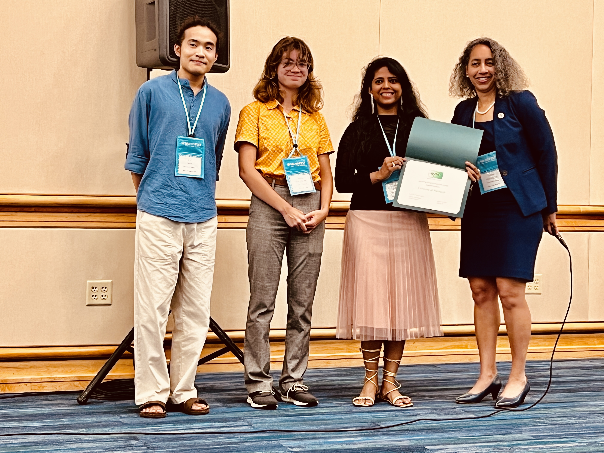
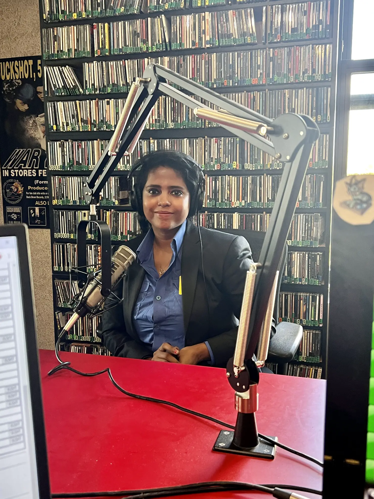
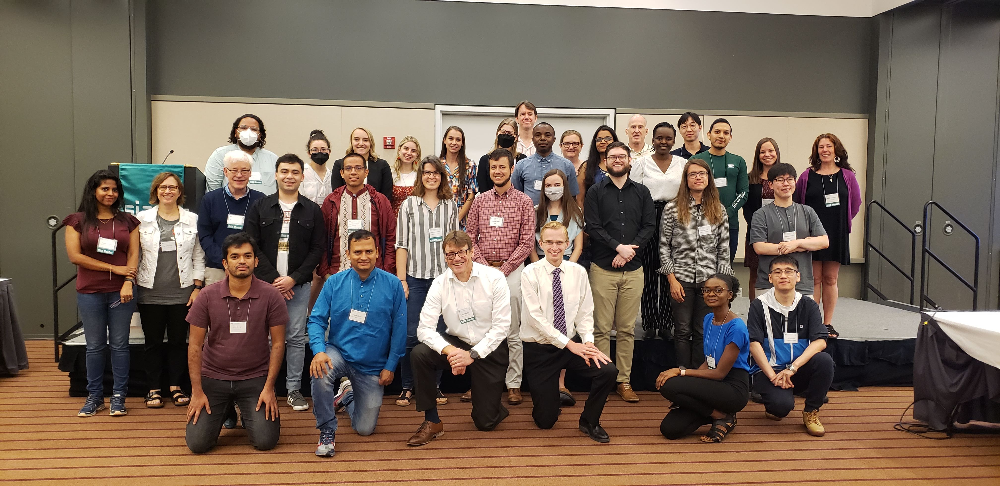

"Graduation Award Winners", Spring 2023. Read More.
"Association for Women in Mathematics: University of Pittsburgh Student Chapter", Student News, 2023, Author: Farjana Siddiqua, President, AWM Pittsburgh Chapter. Read More
"AWM 2023 Student Chapter Awards", AWM News, 2023. Read More.
"Pitt’s Association for Women in Mathematics won an award for scientific excellence", Pitt Wire, 2023. Read More.

In the picture: Pitt AWM Chapter President Farjana Siddiqua and undergraduate students Lark Song, Sasha Sluis-Cremer accept the AWM Student Chapter Award from Dr. Talitha Washington at the MAA MathFest 2023, Tampa, Florida.
Gave an invited talk about "Women in Mathematics and the activities of AWM Pittsburgh Chapter" at Campus Radio Station, University of Pittsburgh, September 20, 2023.

In the picture: Farjana Siddiqua at Campus Radio Station.

In the picture: Farjana Siddiqua (Leftmost) and other SIAM student chapter representatives around the world.
Wrote an article titled Honest Vs Dishonest in national newspaper to raise social awareness against corruption in Bangladesh, The Daily Star, 18 April 2014.